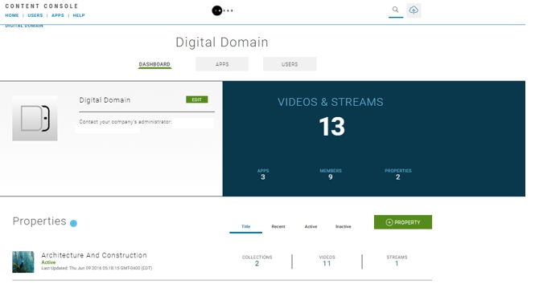
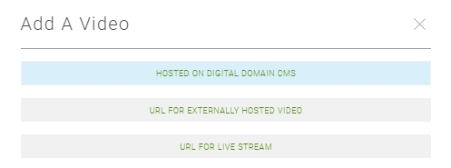

Publishing a Hosted Video
The Content Console offers a flexible video publishing platform where you can tailor your configuration workflow based on your requirements and availability of your video digital assets.
The following tutorial illustrates how to publish a video that is hosted on the Content Console.
PART 1 - CONFIGURE VIDEO PROPERTY AND COLLECTION
Step 1: Launch the Content Console
- Launch the Content Console and log in using your credentials. The Home page displays.

Step 2: Define Video Property
The first step in the video publishing process is to define a property. A property has the following characteristics:
- A Property represents the top-level branding element of your video Collections.
- A list of available Properties display on the Content Console Home page.
- Within each Property you define one or more Collections.
- You then add videos to Collections defined in a Property.
- A video can be reassigned to a different Property and Collection after it is uploaded.
To define a property:
- On the Home page go to Properties.
- Select +Property. The Create a New Property pop-up displays.

- Enter the Property name, headline, and description, then Create. The new property is added to the Properties Summary page listing.
Step 3: Define Video Collection
Within each Property you then define a Collection:
- A Collection is a sub-category of a Property (e.g., TV Series Name).
- After adding a new video asset, you then assign it to a Property and Collection.
- Videos in a Collection can be reordered.
- You can reassign a video to a different Property and Collection.
- Within each Collection you also define a Season that represents a subcategory of the collection (i.e. Season, Series, Year, or Custom)
To define a collection:
- In Home > Properties > Property Name, select +Collection. The Create New Collection pop-up displays.

- Enter the collection name, description, and type, then OK. The Collection page displays.
PART 2 - CREATE VIDEO PROFILE
This section shows you how to set the property and collection the video is contained in, and define the video metadata (i.e., title, description, tags).
Step 1: Select Video Upload Method
- In Home > Properties > Property Name > Collection.
- In the collection select Upload Video (+Upload Video).
- On the Uploader screen, select Hosted on Digital Domain CMS Video.

Step 2: Select Property and Collection
Change the default property assigned to your video and group your video in a collection. Note that both steps are required.
- In Assign to a property section, the currently assigned property is selected. To reassign the current video to a new property, select it from the drop-down.
- After you select the property, the Assign to a collection" drop-down displays and presents a list of collections associated with the current property. Select a collection to assign to the video.
Step 3: Configure Video Security
Throughout the publishing cycle, your videos will require different levels of security for access, downloading, and sharing to social networks. Video access levels include:
- Private - Video can be accessed by the console user who uploaded it.
- Internal - Video can be accessed by the console administrator and designated console users.
- Public - Video is visible to external consumers and can be accessed by console administrator and designated console users.
As a best practice, set your video to private for the initial upload. You will need to add key art and set the video start time in post upload activities.
To configure video security:
- Go to the Visibility section.
- Select a radio button to set the access level.
Step 4: Enable / Disable Video Downloading
You can set whether you want to enable or disable the ability for external consumer to download video.
- Option uses download method supported by website or device.
- Consumer must comply with video download terms of service of website or device.
To enable / disable video downloading:
- Go to the Downloadable section.
- Select an option box to enable/disable video download (Yes/No).
Step 5: Enable / Disable Social Sharing
You can enable / disable social sharing of videos. Available social sharing networks is limited to those supported by the website or device a video is published on.
To enable / disable social sharing:
- Go to the Sharing section.
- Select an option box to enable/disable social sharing (Yes/No).
Step 6: Define Video Metadata
Metadata is used to uniquely identify the characteristics of each video.
- Videos can be tagged with metadata including Title, Description, and Search Tags.
- The default language for metadata is English.
- A Consumer will see the metadata on websites where a video is posted.
- A Publisher can search for metadata in the Content Console.
Title (Required)
- Effective titles summarize the video subject.
- They typically contain 5 words are less.
- Use descriptive keywords that grab a viewers attention.
- Should make sense out of context when they appear in search research.
Headline
- Effective headlines use a unique a set of reasons why a user should view your video.
- Some techniques for creating catchy headlines include using numbers, trigger words, adjectives, keywords, and promises (e.g., details on what you will experience when watching the video, etc.).
Description
- Effective descriptions are concise (e.g., a small paragraph or lead-in sentence with bullet points).
- Should include exciting descriptions about video topic that will attract viewers attention.
- Should include hashtags (#) so they can be easily promoted on social media site.
- Should include credits associated with video creator, participants, actors, promoters, etc.
Tags
- Search tags help to promote your video on social media sites and search engines.
- Should contain keywords on who you are (individual, business, event, etc.)
- To gain an edge on coverage, perform research on competitors, sites most relevant to your video subject, and tag names.
- Search tags must be comma separated.
To define video metadata:
- Enter the Title, Headline, Description, and Tags for your video.
- Enter one or more Tags (comma separated).
Step 7: Set Video Projection
Indicate what type of video you will be uploading.
- Flat - This mode supports Monoscopic 360° videos. This video type is typically filmed with a single camera and stitched together to form a single equirectangular video.
- Spherical - This video type is usually filmed using two or more cameras and supports the use of HMD devices. Characteristics include:
- Uses stereoscopic technique to render images so there is a slight offset between your left and right eye.
- This view creates and impression of depth a full 360 experience.
To set video projection:
- Go to Projection.
- Select an option box to set video projection (i.e., Spherical or Flat).
Step 8: Set Video Blind Spot
Because your 360 video is created using multiple cameras, it’s possible your video output could include some clipping of content referred to as a "Nadir Blind Spot."
-
The blind spot represents the position where the camera rig is supported and the tripod point is either left out of the video or the images are pinched together to eliminate the hole.
-
The blind spot is usually corrected in post-production and filled in to imply a fully captured 360 image.
-
The blind spot is typically filled by superimposing footage in that area or by inserting a “black” image at the nadir of the 360 video. The blind spot can then be used to populate with advertising space, navigations, or other uses.
If your video includes a blind spot and you have not adjusted it in post-production, you can designate the blind spot location (Top or Bottom) and add a custom photo, logo, or icon to fill the blank space.
To configure blind spot and projection:
- Go to Blindspot and select from the drop-down based on the following scenarios:
| If Projection = | |
|---|---|
| Flat, Blind Spot = None | |
| Spherical and video includes a Blind Spot, Blind Spot = Top or Bottom | |
| Spherical and video does not include a Blind Spot, Blind Spot = None |
Step 9: Upload Hosted Video
The upload video process allows you to upload a VoD video. Supported video and audio requirements include:
| Type | Description |
|---|---|
| Video Type | On Demand (VoD) |
| Video Format | MP4 HD (1040p), MP4 (2K), and *MP4 (4K) |
| Audio Compression and Encoding Scheme | Advanced Audio Coding (AAC) |
See Video Publishing Requirements for prerequisite steps and video and audio requirements.
To upload a hosted video:
- Go to the Upload Video section
- Use the Drag and Drop or Browse method to perform the upload. A progress indicator will display while the video is uploading.
- After the upload is complete, you will see a Review confirmation prompt.
Step 10: Review / Update Final Details
The Video > Edit page displays a final presentation of your video configuration. Here you can:
- Review the current settings assigned to the video for accuracy.
- Verify that descriptions represent the message and style you want to present.
- Update the video thumbnail as needed.
- Perform a video check to validate that the master video file is properly uploaded and initiates the stream.
The following table shows page options and permission state:
| Option / Setting | Description | Permission |
|---|---|---|
| Update Key Art | Image that will display on video player. Select upload new image. | Update |
| Check Video | Performs master video file check. | Update |
| Video Origin | Location where the video is hosted on the Digital Domain server. | Read-only |
| Video Title | Title that summarizes video subject. | Edit |
| Headline | Video headline caption. | Edit |
| Description | Video description. | Edit |
| Visibility Settings | Private, Internal, Public | Update |
| Allow Downloads | Video download setting Yes/No | Update |
| Allow Sharing | Video sharing setting Yes/No | Update |
| Allow Comments | Video comments setting Yes/No | Update |
| Projection | Video projection setting Flat/Spherical | Update |
| Tag & Search Words | List of search tags. | Update |
| Views | Number of video views. | Read-only |
| Downloads | Number of video downloads. | Read-only |
| Uploaded | Video upload time. | Read-only |
| File Size | Video file size. | Read-only |
| Duration | Video play time. | Read-only |
| Users | Displays number of users in each role that has access to your video (Admins, Content Managers, Viewers) | Read-only |
| Distribution Apps | Displays a list of apps the current video is associated with | Read-only |
To update video details:
- Review the table above and Edit / Update items as needed.
To update video key art:
Key Art is an still image file that is used to showcase your video. It typically uses a memorable image or icon that represents the essence of the story or topic presented in a video. Key art is also referred to as a thumbnail. When your video was initially uploaded a thumbnail was assigned as the default start page.
- The initial video upload process auto-generates a thumbnail.
- You can upload a key art to replace auto-generated version.
- Key Art displays on your video profile, property, and collection pages.
Supported key art size specifications include:
| Key Art Setting | Description |
|---|---|
| Image Size | 16:9, 1600 x 825 |
| Format | 4K |
| Live Area | Square, 825 x 825 |
To upload key art:
- Select the current image and upload a new image based on the image requirements.
Step 11: Publish Video
- If you would like your video to go live on all sites/applications where it is posted, set visibility to Public.
- If you are happy with the video configuration, click Save.